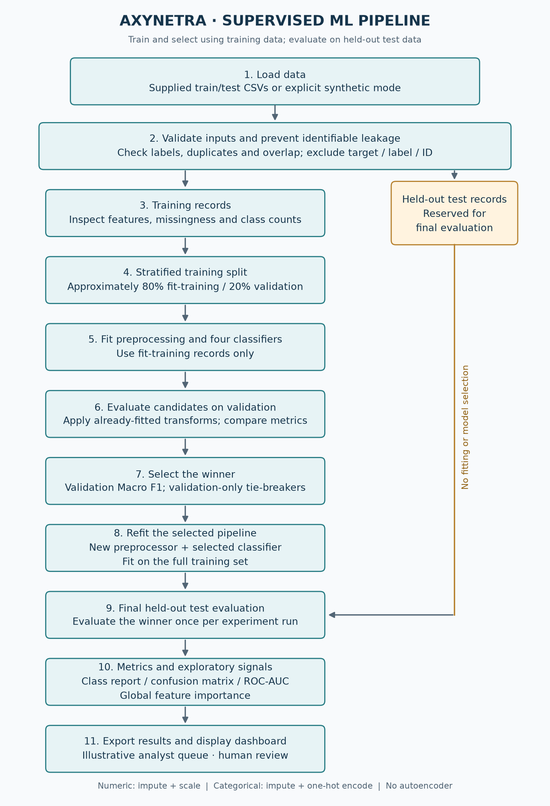

Every input has a role.
Every result has a context.
A guide to the supervised learning model, selected features and evaluation protocol in Rohan Ktksu’s Axynetra project.
One flow. Ten possible categories.
Each CSV row describes a network connection, or flow. Supervised classifiers learn the relationship between its measurements and a known attack_cat label. The model predicts Normal or one of nine attack categories.
Normal · Analysis · Backdoor · DoS · Exploits · Fuzzers · Generic · Reconnaissance · Shellcode · Worms
No autoencoder, packet capture or live blocking is implemented.
A documented, modified split.
The bundled cleaned files contain 99,268 training and 73,791 test rows. The browser uses reproducible stratified caps of 10,000 / 5,000, seed 42.
Conflicting training labels for identical predictors and remaining training duplicates were removed. Test rows overlapping original training predictors were removed; remaining within-test duplicates were retained. All ten categories remain.
Source: a pinned community mirror of UNSW-NB15. These results describe a cleaned, sampled experiment, not the unchanged official benchmark. SHA-256 checks verify file integrity, not independent authentication of the mirror.
Fit on training. Select on validation. Evaluate on test.
- Validate: normalize category spelling and reject missing/unsupported labels, infinite measurements, duplicate training predictors, ambiguous headers and exact train/test overlap. Exclude attack_cat, label and id.
- Split: reserve approximately 20% of each training category for validation. Categories with at least two examples keep one or more in both splits; singleton categories remain in fit-training and are logged.
- Preprocess: numeric inputs use median imputation → StandardScaler. The three categorical inputs, proto/service/state, use most-frequent imputation → OneHotEncoder with unknown categories ignored. Preprocessors are fitted inside each candidate pipeline using fit-training only.
- Train: fit four class-weighted algorithms. Rank by validation Macro F1; weighted F1 and accuracy break ties. No hyperparameter search is performed.
- Refit: fit a fresh winning pipeline on all 10,000 training rows. The Train Model button ends here; no held-out performance has been computed.
- Test: Test Model evaluates the winner on 5,000 reserved records, once per browser experiment. It creates metrics, reports, charts, feature importance and alerts.
- Predict: new selections and uploads run the same fitted pipeline. Actual labels are only compared after inference. Predictions do not retrain or change the evaluation.
View pipeline diagram

All 42 eligible predictors are retained.
Feature selection here means excluding identifiers and target leakage. No RFE, PCA, mutual-information filter or top-k importance cutoff is used. One-hot encoding expands categorical inputs into learned indicators, so the transformed input count can be greater than 42.
Excluded from every model input
| Column | Why it is excluded |
|---|---|
| attack_cat | The ten-class target; it would reveal the answer. |
| label | The binary normal/attack annotation leaks target information. |
| id | A row identifier, rather than a network behavior measurement. |
Four different ways to learn from the same records.
| Algorithm | How it works | Why it is included |
|---|---|---|
| Decision Tree | Splits records using learned feature thresholds | Nonlinear single-tree baseline |
| Random Forest | Averages trees trained on bootstrap samples and random feature subsets | Reduces variance and captures interactions |
| Extra Trees | Combines trees with more randomized split thresholds | Alternative tree ensemble |
| Logistic Regression | Learns weighted linear scores for each category | Scaled, class-weighted linear baseline |
The displayed winner comes from the current run. All candidates use class weighting to address imbalance. Browser training uses one execution thread; the seed and statistical estimator settings match the core. Python/scikit-learn versions are shown after training and recorded in the download, so results may differ from the pinned desktop environment.
Read beyond accuracy.
Accuracy: fraction classified correctly. Precision: how often a predicted category is correct. Recall: how many actual records of that category were found. F1: balances precision and recall.
Macro F1 weights all ten categories equally, so rare attacks matter. Weighted F1 weights by observed support. High overall accuracy can coexist with poor rare-attack recall.
A row-normalized confusion matrix shows which true categories get confused. One-vs-rest ROC-AUC measures score ranking for each category. Missing positives/negatives or unlearned classes produce undefined AUC. Coverage is reported; full macro requires all ten categories.
Signals for investigation.
Feature importance is global tree impurity reduction. If the winner is not a tree, the best compatible validation tree supplies it and is named in the output. Importance is associative, not causal, and does not explain individual predictions or select the input subset.
Alert priority = largest uncalibrated model score × manually assumed severity (0–5). Predicted attacks and scores below 0.60 are flagged for human review. Numeric z-score deviations from training medians are exploratory signals, not attack evidence.
What this experiment establishes.
Training and testing execute in a Pyodide background worker in your browser. There is no Python web server or model API behind GitHub Pages. Dataset files are fetched from the public repository; uploaded CSVs remain local to the tab. Refreshing discards the fitted model. The first runtime download can take several minutes on a slow connection.
Repeatedly inspecting test predictions must not be used to tune the model. Unseen networks can differ in traffic patterns, class frequencies and errors. Scores have not been calibrated into operational attack probabilities. The synthetic root notebook is a separate example, and its metrics are not used in this workspace.
The UNSW-NB15 dataset and research contributions belong to their authors. Dataset references and requested academic citations are preserved in the reference README.